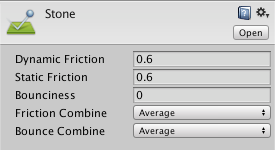

Physic Material
The Physic Material is used to adjust friction and bouncing effects of colliding objects.
To create a Physic Material select Assets > Create > Physic Material from the menu bar. Then drag the Physic Material from the Project View onto a Collider in the scene.
Properties

| Property: | Function: |
|---|---|
| Dynamic Friction | The friction used when already moving. Usually a value from 0 to 1. A value of zero feels like ice, a value of 1 will make it come to rest very quickly unless a lot of force or gravity pushes the object. |
| Static Friction | The friction used when an object is laying still on a surface. Usually a value from 0 to 1. A value of zero feels like ice, a value of 1 will make it very hard to get the object moving. |
| Bounciness | How bouncy is the surface? A value of 0 will not bounce. A value of 1 will bounce without any loss of energy, certain approximations are to be expected though that might add small amounts of energy to the simulation. |
| Friction Combine | How the friction of two colliding objects is combined. |
| - Average | The two friction values are averaged. |
| - Minimum | The smallest of the two values is used. |
| - Maximum | The largest of the two values is used. |
| - Multiply | The friction values are multiplied with each other. |
| Bounce Combine | How the bounciness of two colliding objects is combined. It has the same modes as Friction Combine Mode |
Details
Friction is the quantity which prevents surfaces from sliding off each other. This value is critical when trying to stack objects. Friction comes in two forms, dynamic and static. Static friction is used when the object is lying still. It will prevent the object from starting to move. If a large enough force is applied to the object it will start moving. At this point Dynamic Friction will come into play. Dynamic Friction will now attempt to slow down the object while in contact with another.
When two bodies are in contact, the same bounciness and friction effect is applied to both of them according to the chosen mode. There is a special case when the two colliders in contact have different combine modes set. In this particular case, the function that has the highest priority is used. The priority order is as follows: Average < Minimum < Multiply < Maximum. For example, if one material has Average set but the other one has Maximum, then the combine function to be used is Maximum, since it has higher priority.
Please note that the friction model used by the Nvidia PhysX engine is tuned for performance and stability of simulation, and does not necessarily present a close approximation of real-world physics. In particular, contact surfaces which are larger than a single point (such as two boxes resting on each other) will be calculated as having two contact points, and will have friction forces twice as big as they would in real world physics. You may want to multiply your friction coefficients by 0.5 to get more realistic results in such a case.
The same logic applies to the bounciness model. Nvidia PhysX doesn't guarantee perfect energy conservation due to various simulation details such as position correction. So for example when the bounciness value of an object affected by gravity is 1 and is colliding with ground that has bounciness 1 expect the object to reach at higher positions than then initial one.